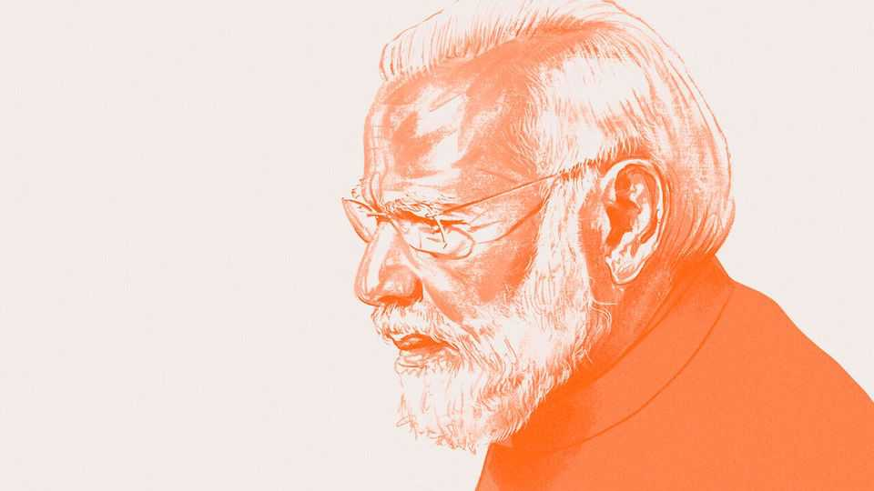
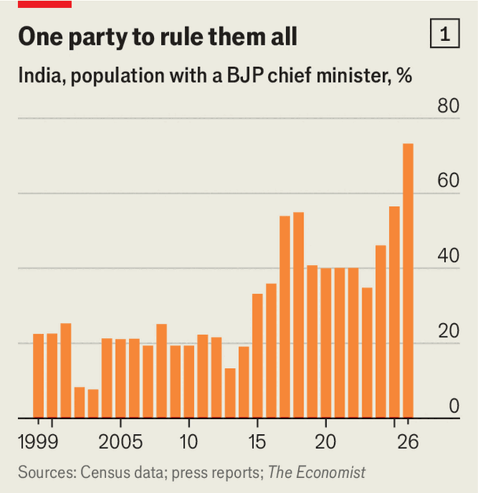
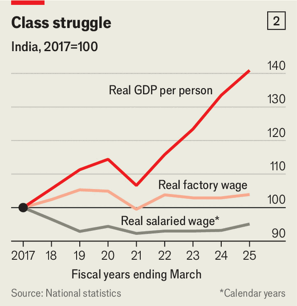
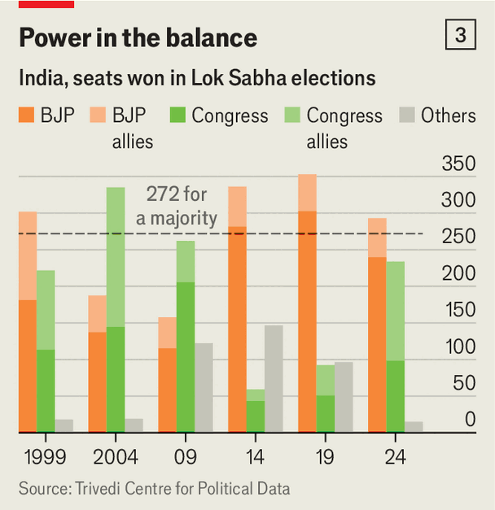

Narendra Modi and the battle for India
India’s strongman has changed the country for good and ill. Now he is facing one of his sternest tests yet

Oct 29th 2026
IN EARLY OCTOBER India’s cabinet issued 11 pages of gushing praise to mark their leader’s quarter of a century in public office. As chief minister of Gujarat, a rich western state, then as prime minister, Narendra Modi had transformed “the lives of every citizen”, earning “unwavering support”. His dedication and honesty showed “the strength of India’s democracy”.
A month of celebrations was organised to mark Mr Modi’s silver jubilee, including exhibitions, tree-planting and grassroots events. It has not gone quite to plan.
Throughout October India has been gripped by protest, as unrest over the leak of an exam erupted into a broader anti-Modi movement. Gen Z activists, student groups and opposition parties accuse Mr Modi and his ruling Bharatiya Janata Party (BJP) of rigging elections, and are agitating for education reform and jobs.
The 76-year-old strongman has appeared unsure how to respond. At times he has tried to mollify activists, notably by sacrificing his education minister in July. Now he is cracking down on them. In Delhi the authorities cut off the mobile internet, cancelled trains and blocked roads while police detained thousands of protesters, beating them with sticks. All of it has been streamed around the world.
Mr Modi still has strong support, particularly among older voters. His ideology remains potent. Though opposition parties are now more unified, they lack organisational muscle and are yet to offer a coherent alternative. Still, the unrest on the streets is a striking challenge to Mr Modi’s rule—both to a governing model that is no longer meeting many Indians’ aspirations, and to strong-arm methods that have closed down other avenues for opposition.
That makes it a good moment to reflect on Mr Modi’s 25 years in office. What kind of India has emerged under him? And what does his record suggest he will do next?
Mr Modi’s arrival on the political stage was heralded by an earthquake, which in January 2001 tore through Kutch in his native Gujarat, killing more than 20,000. The BJP’s ailing chief minister responded haplessly. His party installed a trusted apparatchik—a bearded, bespectacled 51-year-old who had never before stood for public office, let alone built a mass following. Few expected him to last long.
He almost did not, as a result of horrific religious violence that took place in Gujarat the next year. After a group of Hindu pilgrims was burned to death on a train, vigilante mobs went on the rampage; more than 1,000 people died, most of them Muslims. Mr Modi never accepted responsibility or apologised for the bloodshed on his watch—instead, at an election later that year, he inflamed tensions with communal speeches. The BJP won a landslide. He has since won five elections in a row, two more in Gujarat and three nationally.
One confidant from the early days attributes Mr Modi’s remarkable ascent to his long training touring villages as a foot-soldier in the RSS, a Hindu-volunteer group. “His advantage has always been his grasp of the average Indian’s psyche, their hopes and fears,” he says. Steeped in Hindu-revivalist ideology, Mr Modi was particularly attuned to the victimhood many Hindus felt over policies that they believed had unfairly prioritised Muslims.
In Gujarat he established a governing model. Styling himself as a Hindu hardliner and a “development man”, he aggressively courted foreign investment and forged close links with industrialists. He offered businesses land, tax breaks and subsidies. He kept the police, the courts and party cadres under tight control. All the while he projected an image of himself as uniquely incorruptible: ascetic, celibate and without a family to enrich.
As prime minister, Mr Modi applied this model to India. A country of 1.45bn is, in effect, ruled by a few dozen people in the prime minister’s office and around Amit Shah, the home minister and Mr Modi’s longtime enforcer and strategist. Many in Delhi say that Mr Modi is rarely challenged, and cabinet ministers take direction. So do BJP chief ministers.
Only twice before has India had such a dominant leader. The first was Jawaharlal Nehru, who over 17 years as prime minister forged a newly independent India as a secular democracy inspired by socialist economic thinking. The second was his daughter, Indira Gandhi, who took India leftward during her 16 years in office, often ruling as a populist authoritarian.
Mr Modi, born into poverty, defined himself against these figures. By promoting a mixture of Hindu-nationalism, pro-business reform and welfarism, he reduced their once-mighty party, Congress, to a husk. Like Gandhi, though, he took a firm grip over his party, the media and institutions, and built a personality cult. “Even Indira never had this level of control,” says Neelanjan Sircar, a political scientist.

The BJP’s formidable political machine was on show in May when the party unseated Mamata Banerjee, the chief minister of West Bengal, a populous eastern state. More than 70% of Indians now live in a state run by the BJP (see chart 1). Yet five months on, Mr Modi is facing the most difficult test of his premiership. “The BJP is in its strongest and its weakest position simultaneously,” says Rahul Verma of Shiv Nadar University, Chennai. It has never ruled more of the country, nor has it faced such fatigue and open discontent.
To see what kind of country Mr Modi has made, consider his impact in three areas: the economy, society and democracy. On the first he has been a moderniser, though not the reformer many had hoped for. In 2014 he inherited plans for a national digital-identity and -payment system and a goods-and-services tax, to replace 17 state-level taxes. Weaker, coalition governments—long the norm before Mr Modi—had struggled to implement such changes. Mr Modi used top-down power to force them through, a massive achievement.
The result has been to knit India together with a stronger internal market, in which almost all Indians can access services and make payments online. The national highway network is 60% longer than it was when Mr Modi took power and rural households enjoy 22.6 hours of electricity a day, up from 12.5. Voters have been given free grain, electricity connections and cooking gas. Direct cash transfers have cut graft and reduced poverty, forging a direct link between Mr Modi and the poor.
Pro-business more than pro-market, Mr Modi has tilted India towards a model of national capitalism. Since Gujarat his rise has been bound up with that of Gautam Adani, who has built an empire spanning ports, airports, energy and defence. Tycoons like Mr Adani have, like Mr Modi, got hard things done and helped the economy grow—by around 6% a year (similar to before Mr Modi came to power). The Reserve Bank of India has largely kept inflation in check, too, avoiding the gyrations that undid previous prime ministers. Mr Modi has been unusually fiscally prudent.
But the rewards have been top-heavy. The tycoons have done as well as ever. Mr Adani’s wealth has risen from $7bn in 2014 to more than $100bn. Rural workers have not. Their real wages, which typically grew by 6% a year between 2006 and 2014, have since grown by 1%. Salaried workers have done worse still: adjusting for inflation, average pay for this group, accounting for around a quarter of the Indian workforce, has fallen by 5% since 2017 (see chart 2).

Mr Modi’s failure was that he abandoned deeper land and agriculture reforms when they triggered mass protests. Ironically, giving in to that discontent has helped lead to the discontent now. Despite steady growth, Mr Modi has not achieved the economic transformation he desired (and of which his cabinet boasts). The share of workers in agriculture has remained stubbornly at two-fifths; the share in manufacturing has grown only a little. Though India has been covered in shiny roads, informal labour remains ubiquitous. A huge expansion in higher education has not been matched by growth in salaried jobs, suppressing wages and creating a large cohort of frustrated youngsters.
“What we are seeing is Modi reaching the limits of his governing model,” says Pratap Bhanu Mehta, a former vice-chancellor of Ashoka University near Delhi. He has been able to push through big changes that require raw executive power. But he has failed in areas that require consensus-building or systemic reform.
The change to Indian society, the second area, has been more dramatic. Under Mr Modi India has become more brash, nationalistic and Hindu, and, bluntly, a more forbidding place for the country’s 200m Muslims (just under a seventh of the population). This is the most controversial part of his legacy. It is also where opposition to Mr Modi has been least effective.
The most visible change is that Mr Modi has fused religious nationalism with politics. As prime minister he has regularly taken part in ceremonies and rituals—above all the consecration of the Ram Temple on the site of a former mosque in Ayodhya, fulfilling a decades-long campaign. The BJP has pushed through citizenship laws and begun to overhaul Muslim family law. Although the word “secular” remains in the constitution, Mr Modi has damaged the principle that India is a republic that treats all religions equally.
This is unlikely to be reversed. “Hindutva [Hindu-ness] is still a powerful magnet for the middle class,” says Rajdeep Sardesai, a TV anchor and political analyst. BJP chief ministers have emulated Mr Modi—and taken his ideology to new extremes. Opposition politicians have joined in “temple hopping” and “soft Hindutva”. The Cockroach Janta Party (CJP), the youth movement at the centre of the protests, has notably steered clear of religious issues.
Since his fateful first year as chief minister in Gujarat, Mr Modi has fostered a culture of permissiveness around anti-Muslim bigotry and violence. BJP politicians call Muslims “infiltrators” and “encroachers” and issue threats against them. Communal violence has continued to fall from its peak in the 1980s, a period marred by regular bloody riots. But there has been a rise in targeted attacks on Muslims by vigilante groups, which often meet with impunity. This will be the most damaging part of Mr Modi’s legacy—and it, too, will be difficult to reverse.

With his blend of modernisation and religious nationalism, Mr Modi has been remarkably successful at unifying the Hindu vote. But how long can that go on if voters fret about the economy? In the national election in 2024, voters angry about jobs turned away from the BJP, forcing Mr Modi to govern in coalition (see chart 3). Praveen Chakravarty, an MP who leads polling for Congress, claims that age is now the main electoral dividing line, with under 30s—who make up almost 30% of eligible voters—turning against Mr Modi.
The focus of those on the street is the third area: Mr Modi’s handling of elections and institutions. Protesters accuse him of “stealing democracy” through a voter-verification process called the Special Intensive Revision (SIR), under which more than 130m names were removed from draft voter rolls. On October 14th Abhijeet Dipke, leader of the CJP, sardonically compared the circumstances with “the Emergency”, a period when Gandhi cancelled elections, locked up political opponents and clamped down on the press: “Declare Emergency officially,” he said.
The last revision of electoral rolls took place more than two decades ago, so one was overdue. The number of removals this time was much higher than before, at least some of which might be explained by higher internal migration or voters dying. Mr Modi’s defenders argue that only a small fraction of the 130m were eligible voters.
The problem is the way the process has been carried out, which has been rushed, opaque and—true to form—centralised. Millions who were wrongly removed were not given a proper chance to appeal, leaving them disenfranchised when appeals were completed, the vast majority were successful). Whereas previous exercises have been run by state and local operators, this one was run centrally from Delhi, using software that allowed little transparency about who had been removed and why.
To some, this is proof that Mr Modi is a would-be dictator who will break Indian democracy to cling to power. That is going too far. The SIR process has been murky, but there is no evidence that it has swung elections. The argument that Mr Modi holds power because he steals votes skims over the way the opposition has struggled to offer a more compelling alternative.
SIR is better seen as an extreme example of Mr Modi’s strong-arm tactics. His government has extended control over Supreme Court appointments, weakening the independence of the judiciary, and has cowed the once-combative Indian media with a combination of takeovers and hostile investigations. It has similarly used the state to tie political opponents in legal knots. In all, Mr Modi has abused his powers more ruthlessly and over a longer period than any other Indian leader (though Indira Gandhi did suspend democracy, after 21 months she pulled back from the brink, called elections, and was voted out.)
And yet, Indian democracy is more resilient than many make out. The country is vast, diverse and noisy; competitive elections, while flawed, are ingrained. The scandal over SIR has shown that Indians remain deeply attached to their vote, and that the media are still capable of holding the government to account. They have put pressure on the Supreme Court and the Electoral Commission of India to improve the appeals process for excluded voters.
This is a pattern in other democracies, says Milan Vaishnav of the Carnegie Endowment for International Peace, a think-tank. “When you have a very strong leader, they can bend institutions to their will,” he says. “But when their popularity begins to fade, institutions tend to bounce back.”
Mr Modi has never faced stronger headwinds. At 76 he is—whisper many in Delhi—showing signs of ageing. Still, he is unlikely to back down or change his approach. Instead, he will continue to try to divide and weaken the opposition. In private, officials say ministers have been rattled by the way a handful of kids with smartphones have seized the agenda. They will aim to stop the youth protests gathering steam by keeping leaders in custody or tied up in the courts, and channel discontent into opposition parties, which they are more comfortable fighting.
It is not clear such tactics will work. So far protesters have turned crackdowns into viral clips. Attempts to brand the CJP—who wrap themselves in the Indian flag and talk of constitutional rights—as “anti-nationals” have failed. Mr Modi cannot easily take the sting out of the movement, as he did in 2021 by dropping the reforms that had angered farmers; many in his party regard more concessions as a slippery slope. But stifling legitimate dissent will also cause pressure to build.
The prime minister may look to shift the political debate onto more comfortable terrain. He could dial up the Hindu-nationalist rhetoric. Or suddenly table a controversial bill, say on delimitation, a thorny issue involving the allocation of parliamentary seats between states. The BJP will try to paint Rahul Gandhi, the grandson of Indira and leader of the Congress party who heads the opposition alliance, as a street agitator who wants “regime change” without winning elections.
The underlying sources of discontent—education, jobs, wages—will fester. But the opposition will need to show that it has better answers. Mr Gandhi often speaks as if the mood had already turned decisively (and he had not lost three elections in a row). “We are going to destroy them,” he said of Mr Modi and Mr Shah at a rally on October 6th. So far, Mr Modi’s approval ratings have only dipped. Some voters dislike the BJP’s authoritarianism, but also worry about how an unwieldy coalition led by Congress, which has moved to the left under Mr Gandhi, would govern.
The next big test will come in the spring with elections in several states, including the largest, BJP-run Uttar Pradesh. That one looks to be tight. If the BJP wins, it will claim that Mr Modi’s enduring popularity has been proved and the opposition are sore losers. If it loses, it will be the surest sign that Mr Modi’s appeal is waning.
For Mr Modi the risk now would be to believe what his outriders say—that the protests are just a small group of anarchists and anti-nationals who do not reflect Indians’ real grievances. For the opposition it is the reverse: to believe that a few months of street action mean that Mr Modi is in terminal decline. Over 25 years he has proved remarkably resilient. He is not going to go down without a fight.■
Stay on top of our India coverage by signing up to Essential India, our free weekly newsletter.